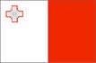

{kind=link}


![[Country map of Malta]](../maps/mt-map.jpg)
| Malta |  |
|
| | |
| Introduction |
Background: Great Britain formally acquired possession of Malta in 1814. The island staunchly supported the UK through both World Wars and remained in the Commonwealth when it became independent in 1964. A decade later Malta became a republic. Over the last 15 years, the island has become a major freight transshipment point, financial center, and tourist destination. It is an official candidate for EU membership.
| Geography |
Location: Southern Europe, islands in the Mediterranean Sea, south of Sicily (Italy)
Geographic coordinates: 35 50 N, 14 35 E
Map references: Europe
Area:
total:
316 sq km
land:
316 sq km
water:
0 sq km
Area - comparative: slightly less than twice the size of Washington, DC
Land boundaries: 0 km
Coastline: 140 km
Maritime claims:
contiguous zone:
24 nm
continental shelf:
200-m depth or to the depth of exploitation
exclusive fishing zone:
25 nm
territorial sea:
12 nm
Climate: Mediterranean with mild, rainy winters and hot, dry summers
Terrain: mostly low, rocky, flat to dissected plains; many coastal cliffs
Elevation extremes:
lowest point:
Mediterranean Sea 0 m
highest point:
Ta'Dmejrek 253 m (near Dingli)
Natural resources: limestone, salt, arable land
Land use:
arable land:
38%
permanent crops:
3%
permanent pastures:
0%
forests and woodland:
0%
other:
59% (1993 est.)
Irrigated land: 10 sq km (1993 est.)
Natural hazards: NA
Environment - current issues: very limited natural fresh water resources; increasing reliance on desalination
Environment - international agreements:
party to:
Air Pollution, Climate Change, Desertification, Endangered Species, Law of the Sea, Marine Dumping, Nuclear Test Ban, Ozone Layer Protection, Ship Pollution, Wetlands
signed, but not ratified:
Biodiversity, Climate Change-Kyoto Protocol
Geography - note: the country comprises an archipelago, with only the three largest islands (Malta, Ghawdex or Gozo, and Kemmuna or Comino) being inhabited; numerous bays provide good harbors
| People |
Population: 391,670 (July 2000 est.)
Age structure:
0-14 years:
20% (male 41,046; female 38,273)
15-64 years:
67% (male 132,692; female 131,532)
65 years and over:
13% (male 20,091; female 28,036) (2000 est.)
Population growth rate: 0.74% (2000 est.)
Birth rate: 12.75 births/1,000 population (2000 est.)
Death rate: 7.7 deaths/1,000 population (2000 est.)
Net migration rate: 2.39 migrant(s)/1,000 population (2000 est.)
Sex ratio:
at birth:
1.06 male(s)/female
under 15 years:
1.07 male(s)/female
15-64 years:
1.01 male(s)/female
65 years and over:
0.72 male(s)/female
total population:
0.98 male(s)/female (2000 est.)
Infant mortality rate: 5.94 deaths/1,000 live births (2000 est.)
Life expectancy at birth:
total population:
77.94 years
male:
75.49 years
female:
80.62 years (2000 est.)
Total fertility rate: 1.92 children born/woman (2000 est.)
Nationality:
noun:
Maltese (singular and plural)
adjective:
Maltese
Ethnic groups: Maltese (descendants of ancient Carthaginians and Phoenicians, with strong elements of Italian and other Mediterranean stock)
Religions: Roman Catholic 91%
Languages: Maltese (official), English (official)
Literacy:
definition:
age 10 and over can read and write
total population:
88%
male:
88%
female:
88% (1985)
| Government |
Country name:
conventional long form:
Republic of Malta
conventional short form:
Malta
local long form:
Repubblika ta' Malta
local short form:
Malta
Data code: MT
Government type: parliamentary democracy
Capital: Valletta
Administrative divisions: none (administered directly from Valletta)
Independence: 21 September 1964 (from UK)
National holiday: Independence Day, 21 September (1964)
Constitution: 1964 constitution substantially amended on 13 December 1974
Legal system: based on English common law and Roman civil law; has accepted compulsory ICJ jurisdiction, with reservations
Suffrage: 18 years of age; universal
Executive branch:
chief of state:
President Guido DE MARCO (since 4 April 1999)
head of government:
Prime Minister Eddie FENECH ADAMI (since 6 September 1998); Deputy Prime Minister Lawrence GONZE (since 4 May 1999)
cabinet:
Cabinet appointed by the president on the advice of the prime minister
elections:
president elected by the House of Representatives for a five-year term; election last held NA April 1999 (next to be held by NA April 2004); following legislative elections, the leader of the majority party or leader of a majority coalition is usually appointed prime minister by the president for a five-year term; the deputy prime minister is appointed by the president on the advice of the prime minister
election results:
Guido DE MARCO elected president; percent of House of Representatives vote - NA
Legislative branch:
unicameral House of Representatives (usually 65 seats; note - additional seats are given to the party with the largest popular vote to ensure a legislative majority; current total: 65 seats; members are elected by popular vote on the basis of proportional representation to serve five-year terms)
elections:
last held 5 September 1998 (next to be held by September 2003)
election results:
percent of vote by party - PN 51.8%, MLP 46.9%, AD 1.2%; seats by party - PN 35, MLP 30
Judicial branch: Constitutional Court, judges are appointed by the president on the advice of the prime minister; Court of Appeal, judges are appointed by the president on the advice of the prime minister
Political parties and leaders: Alternativa Demokratika/Alliance for Social Justice or AD [Harry VASSALLO]; Malta Labor Party or MLP [Alfred SANT]; Nationalist Party or PN [Edward FENECH ADAMI]
International organization participation: C, CCC, CE, EBRD, ECE, EU (applicant), FAO, G-77, IAEA, IBRD, ICAO, ICFTU, ICRM, IFAD, IFRCS, ILO, IMF, IMO, Inmarsat, Intelsat, Interpol, IOC, IOM (observer), ISO (correspondent), ITU, NAM, OPCW, OSCE, PCA, UN, UNCTAD, UNESCO, UNIDO, UPU, WCL, WHO, WIPO, WMO, WToO, WTrO
Diplomatic representation in the US:
chief of mission:
Ambassador George SALIBA
chancery:
2017 Connecticut Avenue NW, Washington, DC 20008
telephone:
[1] (202) 462-3611, 3612
FAX:
[1] (202) 387-5470
consulate(s):
New York
Diplomatic representation from the US:
chief of mission:
Ambassador Kathryn Haycock PROFFITT
embassy:
3rd Floor, Development House, Saint Anne Street, Floriana, Malta
mailing address:
P. O. Box 535, Valletta
telephone:
[356] 235960
FAX:
[356] 243229
Flag description: two equal vertical bands of white (hoist side) and red; in the upper hoist-side corner is a representation of the George Cross, edged in red
| Economy |
Economy - overview: Major resources are limestone, a favorable geographic location, and a productive labor force. Malta produces only about 20% of its food needs, has limited freshwater supplies, and has no domestic energy sources. The economy is dependent on foreign trade, manufacturing (especially electronics and textiles), and tourism; the state-owned Malta drydocks employs about 3,800 people. In 1999, over 1 million tourists visited the island. Per capita GDP of $13,800 places Malta in the ranks of the less affluent EU countries. The island is divided politically over the question of joining the EU. The sizable budget deficit remains a key concern.
GDP: purchasing power parity - $5.3 billion (1999 est.)
GDP - real growth rate: 4% (1999 est.)
GDP - per capita: purchasing power parity - $13,800 (1999 est.)
GDP - composition by sector:
agriculture:
3%
industry:
26%
services:
71% (1997 est.)
Population below poverty line: NA%
Household income or consumption by percentage share:
lowest 10%:
NA%
highest 10%:
NA%
Inflation rate (consumer prices): 1.8% (1999 est.)
Labor force: 143,700 (October 1997)
Labor force - by occupation: industry 24%, services 71%, agriculture 5% (1999 est.)
Unemployment rate: 5.5% (September 1999)
Budget:
revenues:
$1.32 billion
expenditures:
$1.76 billion, including capital expenditures of $NA (1998 est.)
Industries: tourism; electronics, ship building and repair, construction; food and beverages, textiles, footwear, clothing, tobacco
Industrial production growth rate: NA%
Electricity - production: 1.62 billion kWh (1998)
Electricity - production by source:
fossil fuel:
100%
hydro:
0%
nuclear:
0%
other:
0% (1998)
Electricity - consumption: 1.507 billion kWh (1998)
Electricity - exports: 0 kWh (1998)
Electricity - imports: 0 kWh (1998)
Agriculture - products: potatoes, cauliflower, grapes, wheat, barley, tomatoes, citrus, cut flowers, green peppers; pork, milk, poultry, eggs
Exports: $1.8 billion (f.o.b., 1998)
Exports - commodities: machinery and transport equipment, manufactures
Exports - partners: France 20.7%, US 18.1%, Germany 12.6%, UK 7.7%, Italy 4.8% (1998)
Imports: $2.7 billion (f.o.b., 1998)
Imports - commodities: machinery and transport equipment, manufactured goods; food, drink, and tobacco
Imports - partners: Italy 19.3%, France 17.8%, UK 12.4%, Germany 10.5%, US 8.9% (1998)
Debt - external: $130 million (1997)
Economic aid - recipient: $NA
Currency: 1 Maltese lira (LM) = 100 cents
Exchange rates: Maltese liri (LM) per US$1 - 0.4086 (January 2000), 0.3994 (1999), 0.3885 (1998), 0.3857 (1997), 0.3604 (1996), 0.3529 (1995)
Fiscal year: 1 April - 31 March
| Communications |
Telephones - main lines in use: 171,000 (1995)
Telephones - mobile cellular: 15,650 (1999)
Telephone system:
automatic system satisfies normal requirements
domestic:
submarine cable and microwave radio relay between islands
international:
2 submarine cables; satellite earth station - 1 Intelsat (Atlantic Ocean)
Radio broadcast stations: AM 1, FM 18, shortwave 6 (1999)
Radios: 255,000 (1997)
Television broadcast stations: 6 (1999)
Televisions: 280,000 (1997)
Internet Service Providers (ISPs): 4 (1999)
| Transportation |
Railways: 0 km
Highways:
total:
1,742 km
paved:
1,677 km
unpaved:
65 km (1997 est.)
Ports and harbors: Marsaxlokk, Valletta
Merchant marine:
total:
1,484 ships (1,000 GRT or over) totaling 28,083,952 GRT/46,772,146 DWT
ships by type:
bulk 431, cargo 424, chemical tanker 54, combination bulk 16, combination ore/oil 14, container 64, liquified gas 2, livestock carrier 3, multi-functional large load carrier 4, passenger 7, petroleum tanker 331, refrigerated cargo 44, roll-on/roll-off 48, short-sea passenger 21, specialized tanker 5, vehicle carrier 16 (1999 est.)
note:
a flag of convenience registry; includes ships from 49 countries among which includes Greece 445, Russia 51, Switzerland 45, Italy 44, Norway 40, Croatia 26, Turkey 35, Germany 32, Georgia 23, and Monaco 24 (1998 est.)
Airports: 1 (1999 est.)
Airports - with paved runways:
total:
1
over 3,047 m:
1 (1999 est.)
| Military |
Military branches: Armed Forces (including land forces, an air squadron, a maritime squadron, and the Revenue Security Corps), Maltese Police Force
Military manpower - availability:
males age 15-49:
98,850 (2000 est.)
Military manpower - fit for military service:
males age 15-49:
78,677 (2000 est.)
Military expenditures - dollar figure: $201 million (FY98/99)
Military expenditures - percent of GDP: 5.5% (FY98/99)
| Transnational Issues |
Disputes - international: Malta and Tunisia are discussing the commercial exploitation of the continental shelf between their countries, particularly for oil exploration
Illicit drugs: minor transshipment point for hashish from North Africa to Western Europe